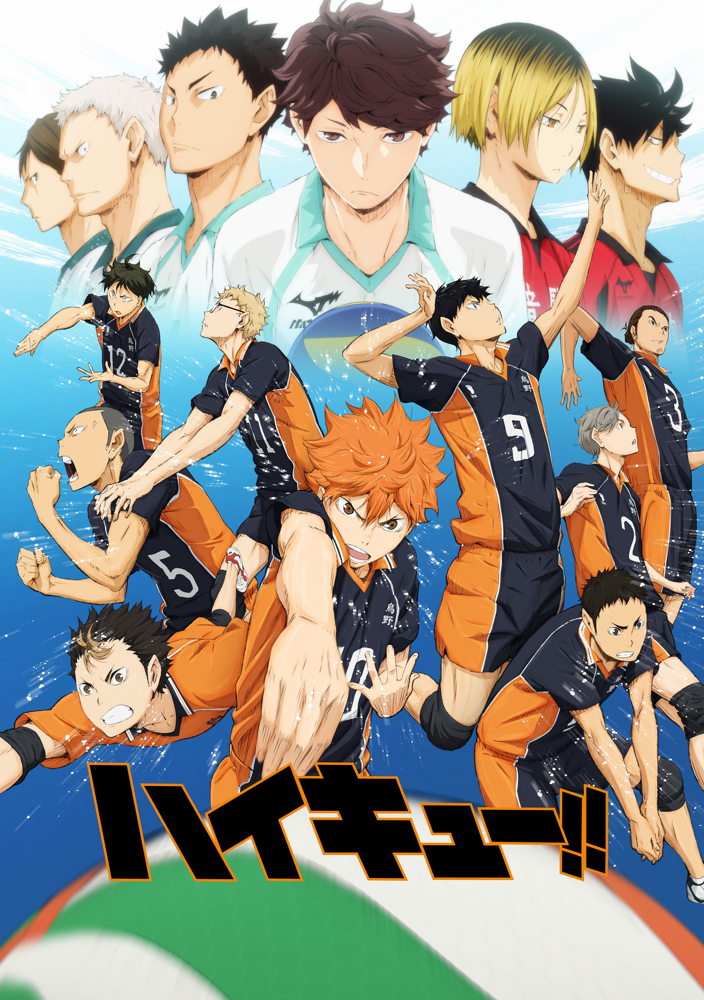
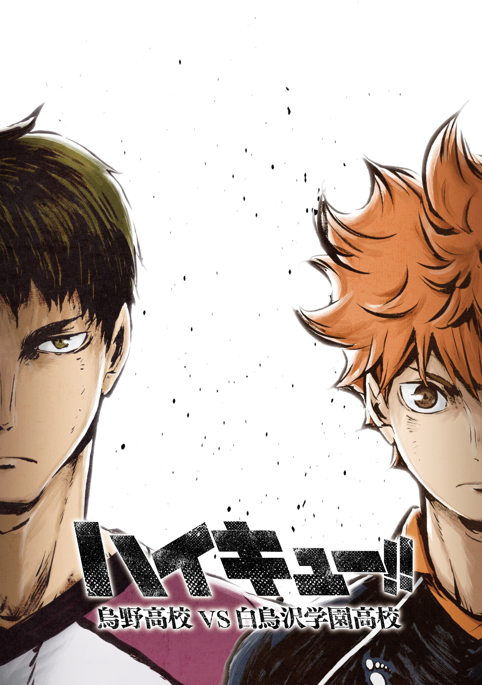
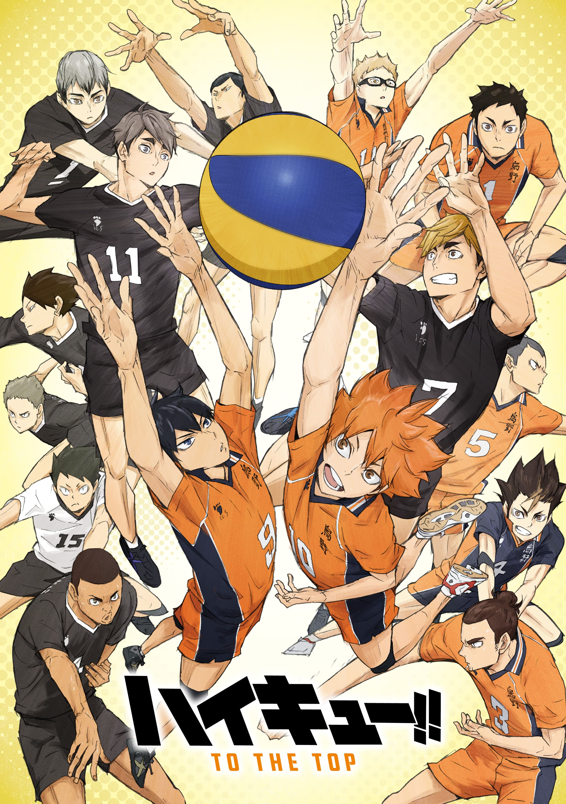
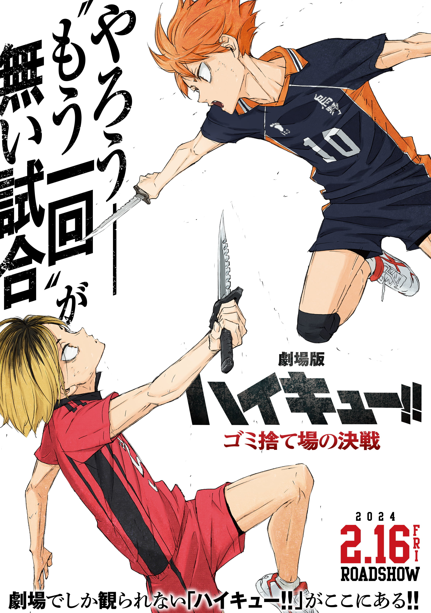
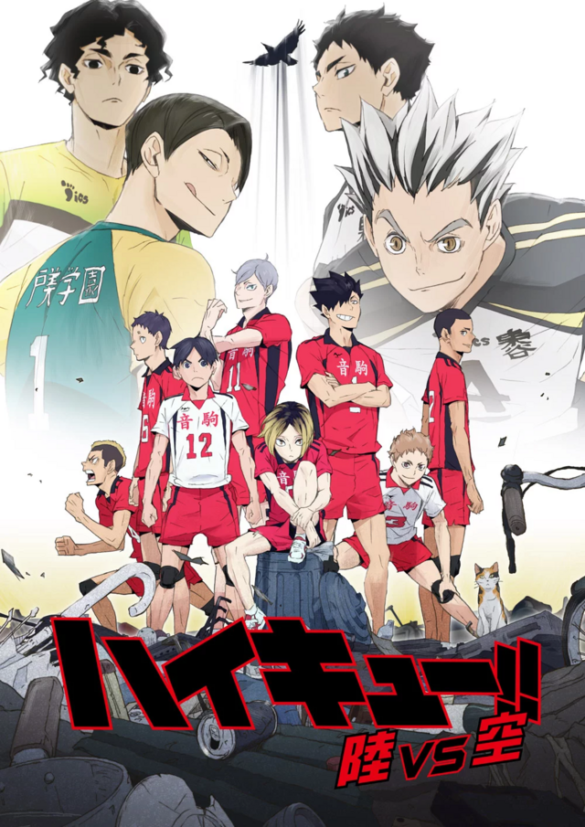

Temporada 1
«Finales y Comienzos»
Shōyō Hinata es un chico que ha querido jugar voleibol desde que vio por televisión al Pequeño Gigante en el torneo nacional. A pesar de su estatura y del nulo interés de la gente que le rodea reune un equipo y participa en un torneo donde se enfrenta al Kitagawa Daiichi, uno de los mejores equipos de la prefectura.

Temporada 2
«¡Vamos a Tokyo!»
Es hora de iniciar los preparativos para el torneo de primavera. Para ello, Karasuno es invitado a un campamento de verano a jugar una serie de partidos de práctica contra varios equipos en Tokyo. Entre ellos se encuentra Nekoma, su rival histórico. Pero antes Hinata y Kageyama tendrán un inesperado encuentro.

Temporada 3
«Saludos»
El partido de la final entre la Preparatoria Karasuno y la Academia Shiratorizawa va a comenzar. Los equipos están ultimando sus preparativos y mentalizándose para lo que les espera.

Temporada 4
«Presentaciones»
Kageyama es invitado al campamento nacional juvenil de entrenamiento y Tsukishima es invitado al campamento para jugadores de primer año de Miyagi, pero Hinata se siente frustrado al no quedar seleccionado y siente que se está quedando atrás.

Pelicula
«La batalla del basurero»
Karasuno High y Nekoma High eran rivales y regularmente se enfrentaban en partidos de práctica. Sin embargo, los dos equipos aún no se habían enfrentado en un partido oficial de los Nacionales. Con el partido decisivo finalmente programado en los Nacionales.

Ova
«Tierra y Cielo: El camino del balón»
Estas dos ovas deben verse seguidas, ya que muestran el camino del Nekoma para llegar al Torneo dePrimavera.